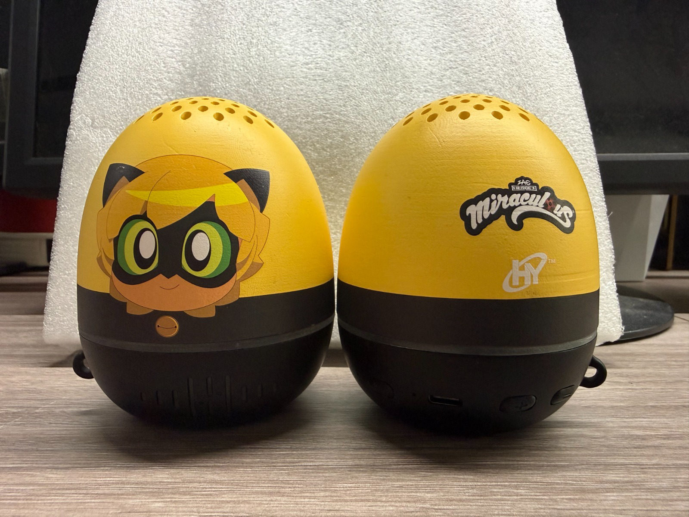
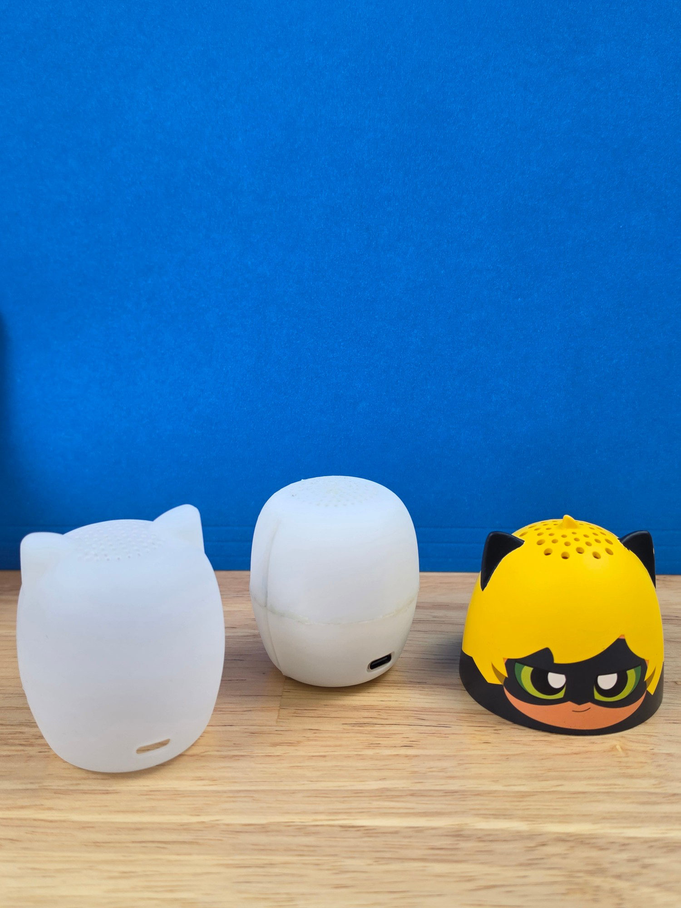
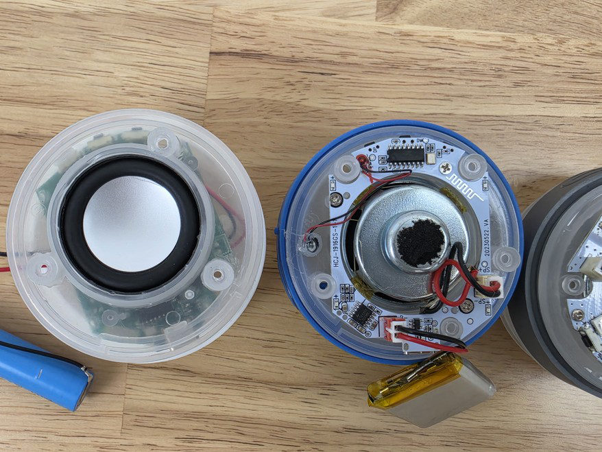
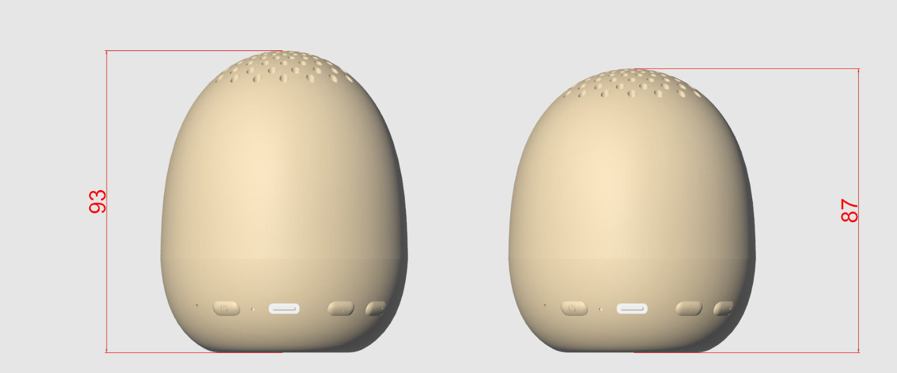
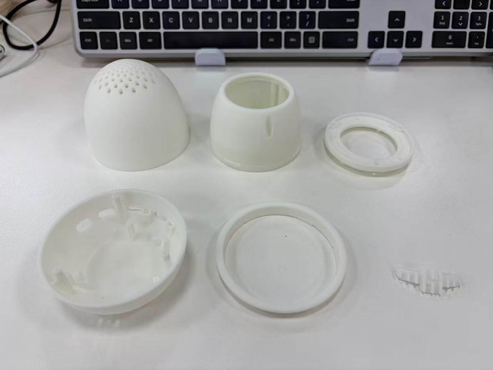
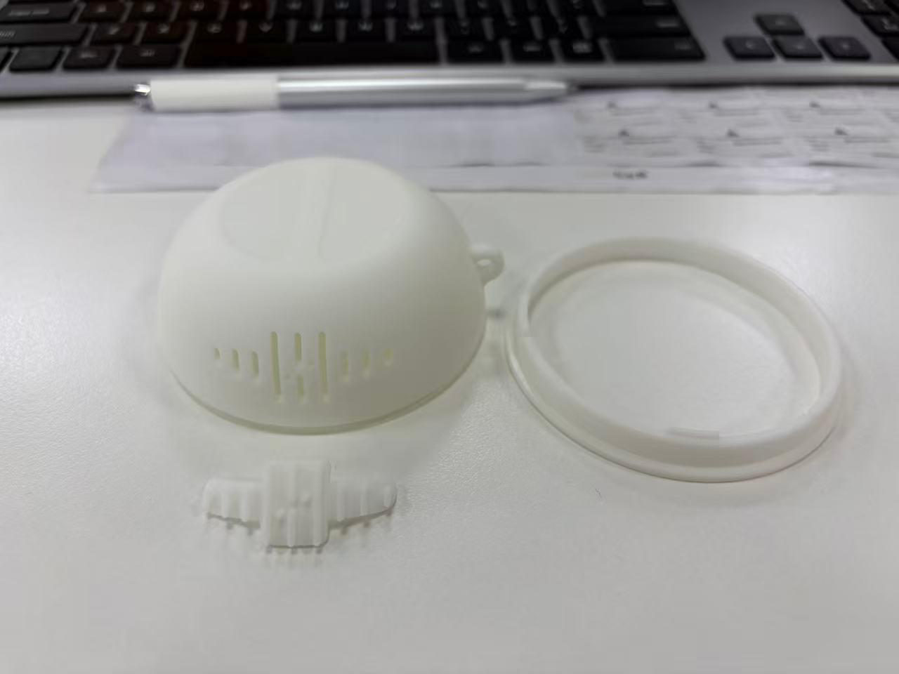

Smart speaker teardown & enclosure redesign
I used physical teardown evidence to decide the next build. We benchmarked our shipped licensed speaker against an early concept and market reference units, then carried what we learned into a smaller, cheaper enclosure that was proven with 3D-printed parts before any tooling spend.

The challenge
The shipped product was a licensed, character-branded portable Bluetooth speaker with an egg-shaped two-tone enclosure. For the next iteration the team needed to lower cost and tighten the form factor without hurting acoustics, battery life or assembly yield. We also had to give our ODM partner concrete, evidence-based build direction rather than opinions.
Key question: Where is the cost and size in the current build, and what can we change without degrading sound or build quality?
What I did
Three-way teardown benchmark
Fully disassembled our production unit, an early concept enclosure and market-reference speakers, comparing each side by side.
Component-level comparison
Compared driver size and rating (4 Ω / 5 W), battery format (cylindrical Li-ion vs. LiPo pouch), PCB layout around the driver, button and USB-C placement, and how each enclosure was tooled and fastened.
Dimensional benchmarking in CAD
Overlaid the production enclosure against a refined iteration and cut overall height from 93 mm to 87 mm, for a leaner and lower-material form.
Rapid prototyping before tooling
3D-printed the dome, ring, seal and base as separate parts to check wall thickness, assembly clearances, snap and seal fit, and the grille pattern.
Decisions with ODM and engineering
Turned the evidence into concrete build and cost decisions with the engineering team and ODM partner ahead of the tooling commit.
Teardown & benchmarking




From benchmark to build-ready
The teardown findings went straight into design refinement. A CAD overlay of the current and refined enclosures set the new envelope. Each printed part was then checked on its own and as an assembly, so fit, acoustics and assembly issues came out on the bench instead of in the tool.



Results
Enclosure height reduced (93 → 87 mm) for a leaner, lower-cost form factor
Enclosure parts prototyped and fit-checked before any tooling spend
Unit types torn down to set build and cost direction with the ODM
The outcome was a build-ready design direction backed by physical evidence. The ODM received specific, justified changes, and the team caught fit and quality risks before paying for hard tooling.